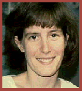

Objective | Education | Employment | Other Info
Masters degree graduate interested in a telecommunications position in the Denver or Boulder area. Hight skilled in the use of computers, audio/video equipment, and the uplink/downlink aspects of satellite communications. Intersted in positions with a strong international component. Willing to Travel.
Satellite Technician(Front Range Media inc.1998-1999): Monitored satellite uplink/downlink procedures to assure quality video trangsmissions. Aided technicians with transmission prolems. Assisted in the assembly and maintenance of uplink facility.
Techical Assitant (Mountain View Bank 1997-1998): Managed data processing system. handled user request and discussed programming options. Managed deliver service.
Salasperson (Computer Visions 1996): Sales and customer support in computers and electronics. Managed commercial accounts in Mountain View and Crabtree locations.
Contact Mary taylor at mtaylor@tt.gr.csu.edu